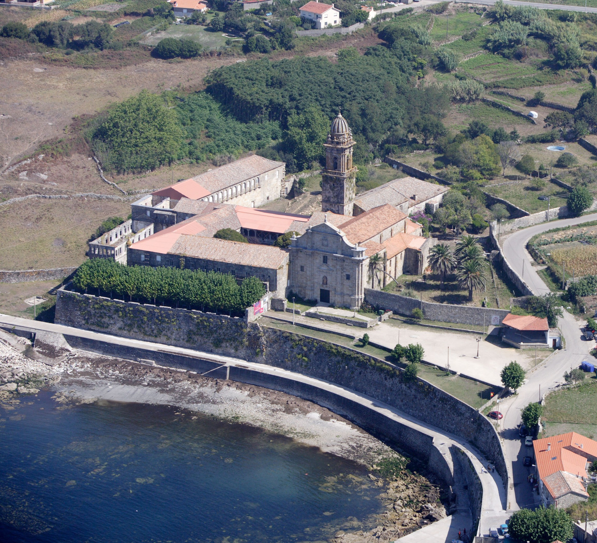
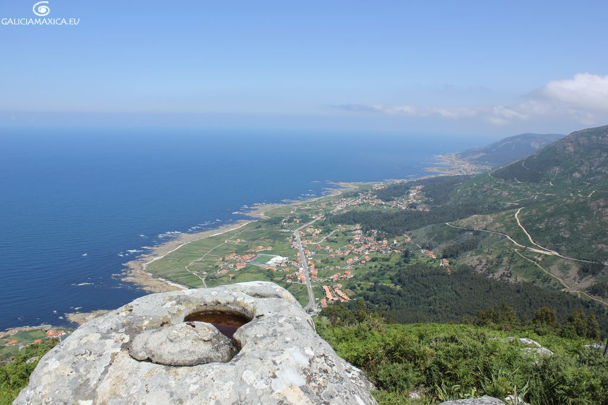

Visitando Oia
Oia es un municipio ubicado en el litoral meridional de la provincia de Pontevedra. Forma parte de la comarca del Bajo Miño. Tiene una población de 3.018 habitantes (según los datos del INE) del año 2018.
Que visitar:
Monasterio de Santa María de Oia

Castelo de Lousado
Castelo de Chavella
